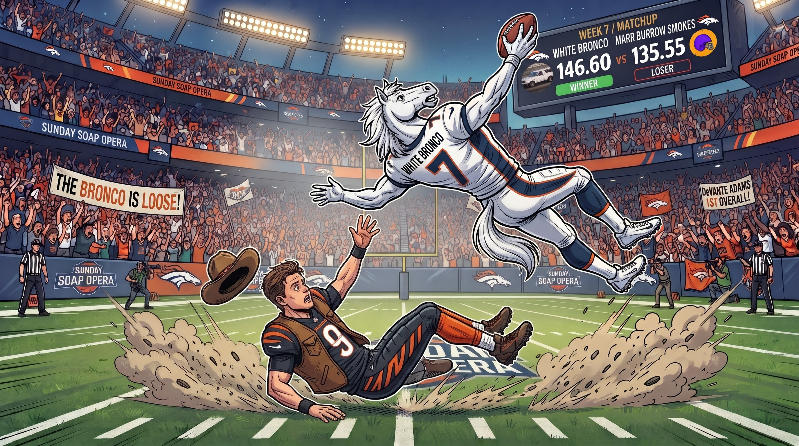

Cross-division warfare unleashed absolute bedlam across The Sunday Soap Opera. In a week where a cocky front office narrowly escaped a historic collapse on Monday night, a 33-year-old karmic debt finally caught up to Josh Almighty's manager, and a pair of lonely basement-dwellers anchored to the bottom of their respective divisions reminded us why they are locked in the cellar, the playoff race has officially plunged into absolute chaos.
In our marquee heavyweight clash, White Bronco pulled off the heist of the century against Marr Burrow Smokes, erasing a massive deficit to survive 146.60 to 135.55.

If anyone was wondering whether the White Bronco front office’s cockiness was finally going to catch up to them, Joe Burrow nearly provided the answer with a nuclear 38.80-point explosion. Heading into Monday night's Dallas-Philadelphia showdown, Marr Burrow held a towering 122.45 to 76.30 baseline lead—leaving White Bronco staring down an imposing 46.15-point deficit. But prime-time delivered ultimate cinema. Dak Prescott (29.40), Javonte Williams (21.50), and CeeDee Lamb (19.40) answered the bell in unison, completely obliterating the gap and rendering Saquon Barkley's 13.10 points an afterthought as White Bronco stole an 11.05-point victory to advance to 6-1.
In a matchup defined by a very delayed cosmic reckoning, The Pain Train derailed Josh Almighty in a lopsided 103.95 to 75.40 statement win.
It took a full 33 years for the universe to balance the books. League investigators finally pieced together why Josh Almighty's manager saw his mid-week trade for Egbuka backfire into an injury and a zero-point empty roster slot: back in 1993, he completely forgot to feed his pet goldfish, Goldie Hawn, causing the poor creature to gently float belly-up while he ate crayons and played Nintendo. The wheels of cosmic justice grind exceedingly slow, but they finally caught up midweek right as Egbuka's injury torpedoed Josh's lineup construction. The Pain Train happily chugged right over the wreckage, paced by D'Andre Swift and Kyler Murray, dropping Almighty down to 4-3 while the Train gets back on track.
The Autobots crime syndicate executed a flawless Sunday night ambush to take down the Bi-Managers of Clench Tuxedos, 126.65 to 114.25.
The Bi-Managers were undoubtedly popping champagne early Sunday afternoon, watching Jordan Love and C.J. Stroud put up clean lines while likely bickering over waiver priority. Never turn your back on the mafia. The Autobots sent out their Sunday night knee-breakers—Jameson Williams (21.10) and Rhamondre Stevenson (18.50)—to violently erase the deficit and steal a 12.40-point victory, dropping the Tuxedos to 4-3.
In a clash between lonely division cellar-dwellers, Kyler Duty picked up a win over Three Dots an a Dash, 123.35 to 50.30, though the victor deserves plenty of heat for matching TDnD's dismal 2-5 misery.
Let's be entirely clear: a 2-5 record does not give anyone room to strut. While Three Dots an a Dash bottomed out into a literal pumpkin with a pathetic 50.30 points—highlighted by Daniel Jones posting a hilarious negative -0.30—Kyler Duty is sitting right down there in the basement right alongside them at 2-5, anchoring the opposite division. Sure, Bo Nix bailed Kyler out with a massive 31.50-point masterclass, but stumbling into a single win while your record smells like hot garbage shouldn't fool anyone. Both of these squads are rotting in the cellar of their respective divisions, and Kyler deserves plenty of heat for sitting right at the bottom with them.
The Burger King continued an absolute reign of terror atop the West division, crushing Steeltown Junkies 157.00 to 135.40.
Steeltown Junkies put up a valiant, desperate fight behind a ridiculous 32.65-point aerial bombardment from Drake Maye and 25.35 from Kirk Cousins. It simply didn't matter. Whopper Wentzday's deep-fried offensive machine ground Steeltown into fine powder, paced by Bucky Irving (23.00) and Jared Goff (23.05). The 6-1 juggernaut looks entirely untouchable right now.
RUN CMC clawed their way out of a shallow grave with a gritty 137.95 to 124.10 victory over the Danger Cats.
The Danger Cats got a monster 33.50-point performance from Tony Pollard and 20.80 from Tee Higgins, but once again coughed up a putrid hairball across the rest of the lineup. Geno Smith stepped up with a cool 27.35 points to steady the ship, helping the 'washed' former powerhouse limp back to 4-3 while pushing the felines back to the litter box at 3-4.
White Bronco Receives: B. Corum (RB), Round 7 pick
Josh Almighty Receives: E. Egbuka (WR), Round 16 pick (Autobots)
White Bronco: Grade B Josh Almighty: Grade F (33-Year Goldfish Debt)
On paper, a standard depth-for-picks swap. In reality, the moment Josh Almighty completed the mid-week deal for Egbuka, the long-delayed ghost of Goldie Hawn finally collected on a 33-year overdue fish food debt from 1993, leaving Almighty's roster bleeding out from his injury before Sunday even started. White Bronco wins by default.
Projection: White Bronco 141.31, RUN CMC 117.24
Gazette Pick: White Bronco 🔮
RUN CMC is showing a pulse, but they don't have the heavy artillery to stop the 6-1 juggernaut.
Projection: Danger Cats 118.42, The Pain Train 120.26
Gazette Pick: The Pain Train 🔮
The Cats are too busy hacking up hairballs to slow down a Train building real momentum.
Projection: Josh Almighty 132.13, Autobots 104.69
Gazette Pick: Josh Almighty 🔮
Providing Josh can feed his remaining roster and avoid further 1993 aquatic liabilities, he should bounce back hard.
Projection: Kyler Duty 107.32, Steeltown Junkies 87.14
Gazette Pick: Kyler Duty 🔮
Bo Nix is white-hot, and Steeltown is still licking wounds from the Burger King's beating.
Projection: Clench Tuxedos 112.59, Whopper Wentzday 139.46
Gazette Pick: Whopper Wentzday 🔮
The Bi-Managers will probably overthink their QB room while the King rolls to 7-1.
Projection: Marr Burrow Smokes 108.29, Three Dots an a Dash 102.79
Gazette Pick: Marr Burrow Smokes 🔮
Without a legal rules loophole to exploit, TDnD is a free win on the calendar.